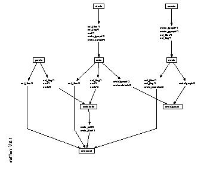
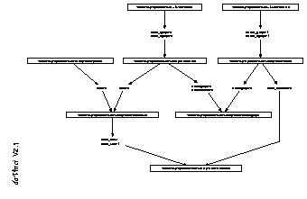

Author(s): Francisco Bueno.
Version: 1.10#6 (2004/8/7, 21:46:39 CEST)
Version of last change: 1.9#257 (2003/12/30, 23:49:22 CET)
The xrefs crossed-references Ciao library includes several modules which allow displaying crossed-references of the code in a program. Crossed-references identify modules which import code from other modules, or files (be them modules or not) which use code in other files. Crossed-references can be obtained as a term representing a graph, displayed graphically (using daVinci, a graph displayer developed by U. of Bremen, Germany), or printed as a list.
The libraries involved are as follows:
etc(xmrefs) displays a graph of crossed-references between modules using daVinci,
etc(xfrefs) displays a graph of crossed-references between files using daVinci,
library(xrefs) obtains a graph of crossed-references between files,
library('xrefs/mrefs') obtains a graph of crossed-references between modules,
library('xrefs/pxrefs') prints a list of crossed-references between files.
The first two are intended to be used by loading in
ciaosh. The other three are intended to be used as modules within an application.
The following is an example graph of the library modules involved in the crossed-references application. It has been obtained with:
[ciao/etc]> ciaosh
Ciao-Prolog 1.5 #24: Tue Dec 28 14:12:11 CET 1999
?- use_module(xmrefs).
yes
?- set_flag(X).
X = 3 ?
yes
?- set_files([xfrefs, xmrefs,
library(xrefs),
library('xrefs/mrefs'),
library('xrefs/pxrefs'),
library('xrefs/xrefs2graph'),
library('xrefs/xrefsbuild'),
library('xrefs/xrefsread')
]).
yes
?- xmrefs.
so that it is displayed by daVinci as:

The following is an example graph of the same module files, where crossed-references have been obtained with xfrefs:xfrefs(whodefs) instead of xmrefs:xmrefs:

For more information refer to the xrefs documentation (xrefs_doc.dvi) in the source library of the Ciao distribution.
Go to the first, previous, next, last section, table of contents.